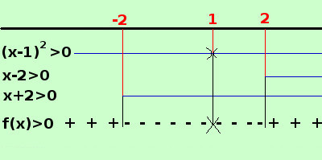

|
y = log (x4 - 2x3 - 3x2 + 8x - 4) devo porre il termine sotto radice maggiore di zero x4 - 2x3 - 3x2 + 8x - 4 > 0 Devo trovare i valori dove la funzione e' positiva Per trovarli devo scomporrre il polinomio associato in fattori e studiare il segno del prodotto dei vari fattori trovati scompongo il polinomio x4 - 2x3 - 3x2 + 8x - 4
scompongo il denominatore prima con il metodo di Ruffini P(1)=1 - 2 - 3 + 8 - 4 = 0 posso scomporre per (x-1) ed ottengo: x4 - 2x3 - 3x2 + 8x - 4 = (x-1)·(x3 - x2 - 4x + 4) =
= (x-1)(x-1)(x2 - 4) = scomponiamo infine la differenza di quadrati
Ora pongo l'espressione maggiore di zero (x-1)2(x-2)(x+2) > 0 Ora pongo ogni fattore maggiore di zero e indico con una linea continua gli intervalli in cui il fattore e' positivo  per x < -2 il primo fattore e' positivo e gli altri sono negativi, quindi il loro prodotto e' positivo, cioe' la funzione f(x) e' positiva per -2 < x < 2il primo fattore e' smpre positivo eccetto nel punto x=1 in cui si annulla, gli altri fattori sono uno negativo ed uno positivo , quindi il loro prodotto f(x) e' negativo e nullo nel punto x=1 per x > 2 i tre fattori sono positivi e quindi il loro prodotto f(x) e' positivo ottengo che la funzione e' positiva negli intervalli x < -2 ∪ x > 2 quindi scrivo il campo di esistenza C.E. = { x ∈ R / x < -2 ∪ x > 2 } Nota: Da notare che questi esercizi concettualmente sono semplici, il difficile e' utilizzare le conoscenze gia' acquisite nei precedenti anni di studio; se si trovano difficolta' occorre riprendere gli argomenti degli anni precedenti e ripassarli |